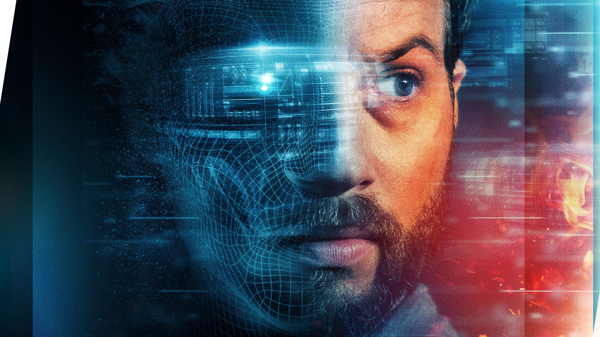

Upgrade
Yapay zekânın korkutucu imgesi özellikle bilimi temel alan tüm kurgusal eserlerde karşımıza çıkmıştır. YZ (yapay zekâ) kavramını ilk olarak 1950’li yıllarda duysak da, bu işin makine olarak temelleri çok daha öncelere gidiyor. Ancak, insan ürünü olan bu zekâyı neden daima potansiyel bir düşman olarak algılarız? Neden bizi ele geçirip efendilikten köleliğe indireceklerdir?
Dünden bugüne, tüm toplumlarda ve kültürlerde hiyerarşinin varlığı eksilmemiştir. Bugünün toplumundaki kapital sömürü düzeni kendiliğinden ya da yapay olarak oluşmuş bir hiyerarşiye sahip olup, kademe kademe aşağı indikçe bir gerçekliği açığa çıkarır: üsttekilerinin yapmak istemedikleri tüm emekler, aşağıdakiler tarafından yapılmaktadır. İş dünyası, kariyer basamakları aşağıdan yukarı ya da yukarıdan aşağı böyle dönüşmektedir. Böylesi bir toplumsal düzende yapay zekânın varlığı, elbette böylesi bir hiyerarşiden beslenecektir, ona dönüşecektir. Bizlere robot diye tanıtılan ve insana, insana ait özelliklere benzeme derecesine göre şaşırdığımız, beğeni oluşturduğumuz makineler insan ırkının yeni hizmet personelleridir. Çünkü YZ tıpkı insan gibi, kendisine ‘’kodlanılanı’’ yapmaktadır. Ve çünkü ‘’Makineler bizi ele geçirecek’’ korkusu insanın sömürüden doğan vicdanının bilinç düzeyindeki yansımasıdır.
Garri Kasparov, 1997 yılında IBM’in ürettiği Deep Blue adlı bilgisayarla yaptığı satranç karşılaşmasında yenilince (her ne kadar bu yenilgi şüpheli olsa da) oldukça yersiz olan bu robotik korkusu daha da artmıştı. Ekim 2015’te Google DeepMind bünyesinde geliştirilen AlphaGo adlı program ise bu kez ünlü bir Go oyunu profesyonelini yenmeyi başarmıştı. Yapay zekânın başarısı, eski mühendislikte insana benzemesiyle değerlendirilirken şimdiyse insana karşı koymasıyla değerlendirilmekte. Ancak netidece YZ, insanı ve doğayı baz alarak geliştiriliyordu. İnsanlık yeterince ideal ve sağlıklı bir durumdaysa, insan kodlaması olan robotlardan ne zarar gelebilirdi? Ya da belki tam da bu sebeple Nietzsche’nin Üst İnsan tanımına YZ üzerinden kavuşulacaktı.

Aslında filmin hikâye yapısı, çok aşina olduğumuz bir çatışmayı ele alıyor; analogun karşısında dijitali, insan faktörünün karşısında yapay zekâ emeğini görüyoruz. Filmin baş karakterlerinden Grey Trace (Logan Marshall-Green)’in geçirdiği bir araba kazası sonrasında belden aşağısının felce uğraması bu temel çatışmayı başlatan olay oluyor. Öncelikle biçimsel açıdan ele alırsak Grey Trace, eski mühendisliğe ait arabaları tamir eden, onları sürmekten keyif alan, çoğunlukla ter ve kir izleriyle vücut bulan bir erkektir. Bu biçimsel tercih, filmin belirlediği analog dünyayı tarif eder. Trace’in eşi olan Asha (Melanie Vallejo) ise bir yazılım şirketinde çalışmakta olan bir kadındır ve onun biçimsel temsili oldukça steril, minimal çizgilere sahip, pratik emeği göstererek dijital dünyayı tarif eder. Bu iki dünyanın evliliği aslında bir uzlaşmaya işaret etmektedir. Her ne kadar bu temsiller filmin kurgusal dünyasına ait olsa da toplumun cinsiyet klişelerinin bozuk yapısından birebir kopyalanmış durumdalar. Zira steril ve dijital olanın kadın olması, erkeğin ise analog temsili olarak felce uğramasının sembolik anlatımda pek de masum bir yerde durduğunu düşünmüyorum.
Filmdeki mimariye dikkat edecek olursak çoğunlukla modern mimarinin-bariz bir şekilde Frank Lloyd Wright etkisi görülmekte-temsil edildiğini kolaylıkla anlayabiliriz. Zira betonun içinde ağacın, neon ışıklarının eşliğinde gökyüzünün birleştiği bir mimaridir bu. Film aslında burada hem mimari üzerinden hem de Asha-Grey çifti üzerinden teknoloji ile doğanın nasıl bir uyumla yaşayacağının/yaşamak zorunda kalacağının altını çiziyor.
Upgrade temelde, popüler kültürde Black Mirror’dan aşina olduğumuz ancak esasında bu dizinin de temellerini atan Jean Baudrillard’ın Simülasyon fikirlerinden daha yeni bir şey söylemiyor. Yine de yapay zekâyı insan beyninin çalışma şeklinin birer kopyası olduğunu söyleyerek, bu yeni canlı türünün de evrim mücadelesinin bir parçası olabileceğini savunuyor. Film, bir şekilde kendi zihnini YZ ile birleştirmiş ve irade gücünü ona vermiş insanları ‘’Upgrade’’ edilmiş yeni insan türü olarak yansıtıyor.
Testere (2004) filminden tanıdığımız Leigh Whannell’ın yazıp yönettiği Upgrade, görselliğiyle, türe uygun yönetimiyle, son dönemin izlenmeyi hak eden bilimkurgu filmlerinden. Fakat tüm bu olumlu yanlarına rağmen büyük bir ciddiyetle anlattığı bu hikâyenin çok daha özgün olmasını beklerdim.
 Interstellar
Interstellar Oblivion
Oblivion The Martian
The Martian Arrival
Arrival Mad Max
Mad Max John Wick
John Wick Deadpool
Deadpool SAW
SAW The Conjuring
The Conjuring Get Out
Get Out Us
Us Zootopia
Zootopia The Incredibles
The Incredibles Inside Out
Inside Out Spider-Man
Spider-Man.svg)